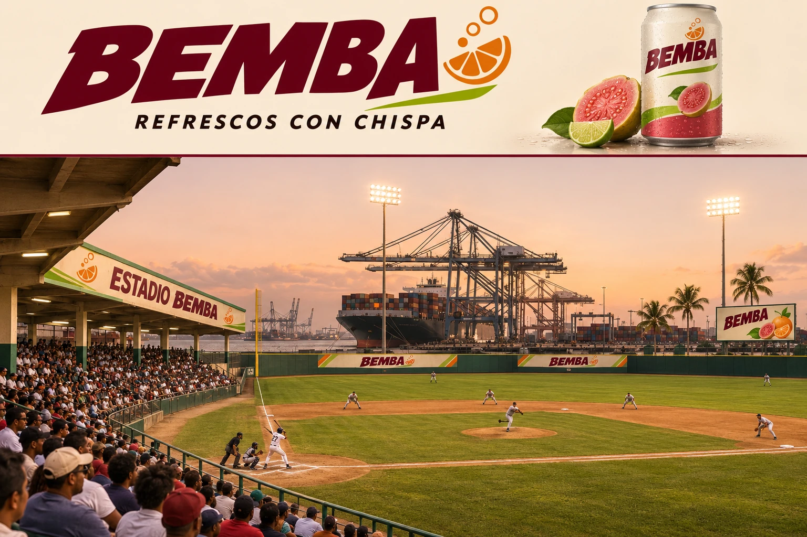
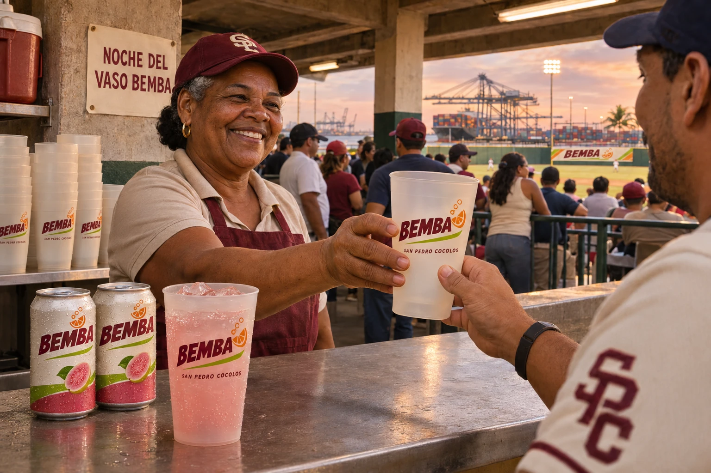
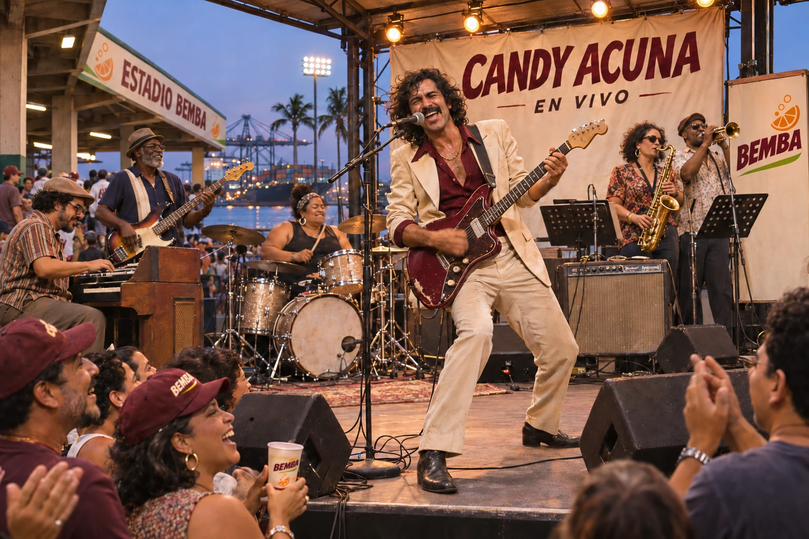
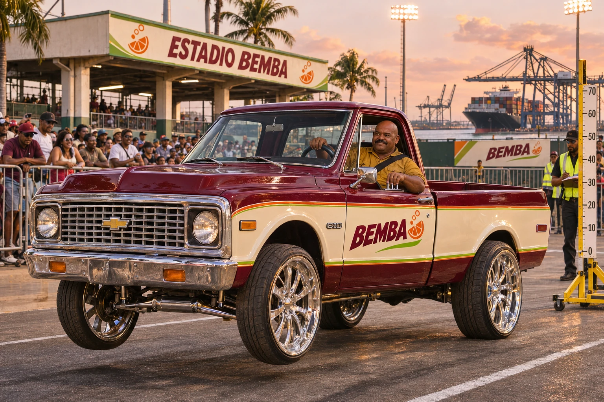
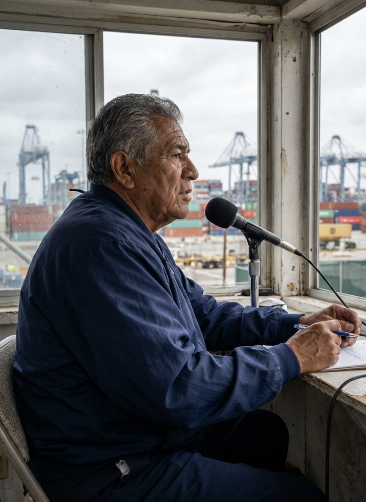
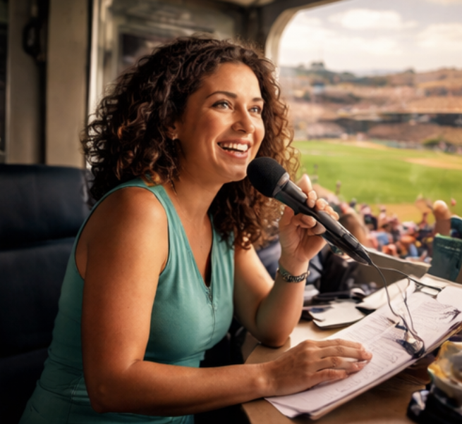
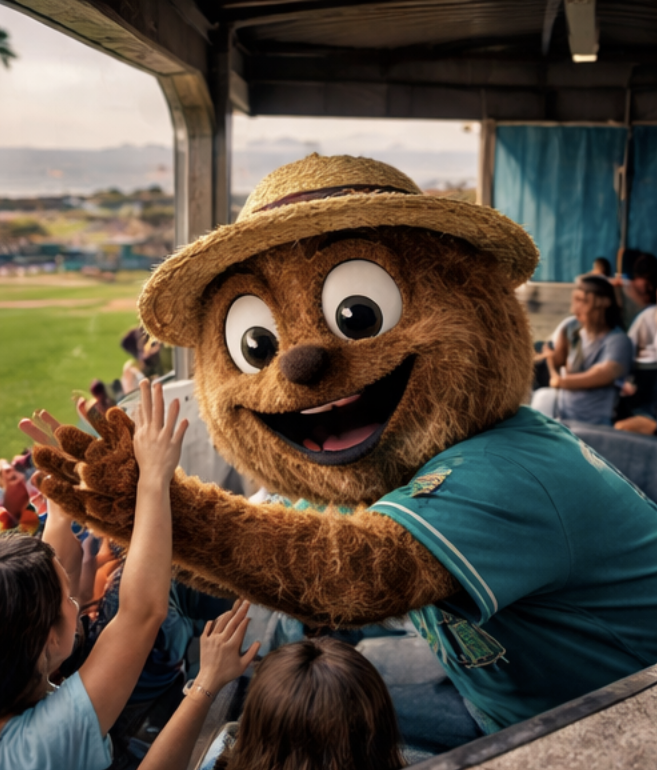
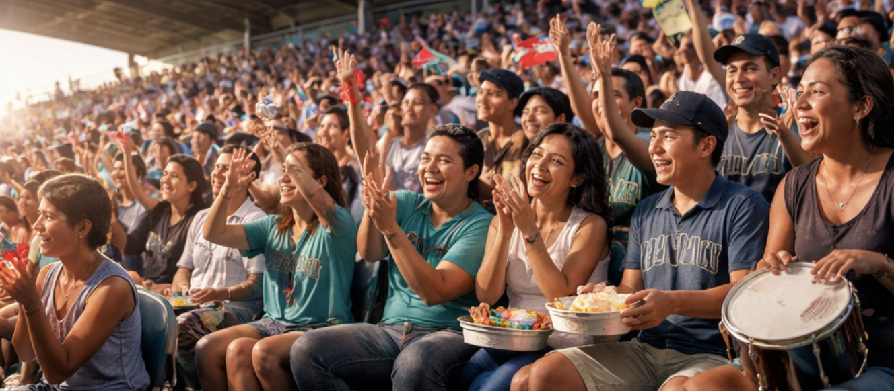

Baseball by the waterfront
A low roof covers the home stand, and green walls frame the outfield. The ballpark keeps its concrete, port cranes and open evening sky as BEMBA’s burgundy lettering appears along the fascia and fence.

Estadio BEMBA · San Pedro de Macorís
The Cocolos play beside the waterfront at Estadio BEMBA. Cargo cranes stand beyond the outfield; the covered concrete stand holds the shade as the evening lights come on.
Pacific Division standings →| Category | Player | Mark |
|---|---|---|
| Home runs | Omar Benyahia | 27 |
| Runs batted in | Naveen Iyer | 78 |
| Stolen bases | Victor Sundqvist | 25 |
| Strikeouts | Enzo Valera | 178 |
| Wins | Nolan Garrity | 20 |
| ERA · 100+ IP | Nolan Garrity | 2.03 |
Claim a card and add content to make it your own! Player cards and other artifacts across GLB can be claimed, curated and crafted by you. Look for unclaimed artifacts, click to claim, craft your submission, and send it to the GLB Board for review. If accepted, you’ll receive a private 16-character claim code, and we’ll publish the artifact with your content and attribution to the User ID you provide. Explore Claim & Create → Select a card to flip it over.
Loading the card collection…
| Player | Pos | B/T | Age | Card |
|---|---|---|---|---|
| Ivo Korolenko | SP | R/R | 29 | SPD-01 |
| Nolan Garrity | SP | L/L | 27 | SPD-02 |
| Kenji Morishita | SP | R/R | 25 | SPD-03 |
| Souleymane Diallo | SP | R/R | 30 | SPD-04 |
| Enzo Valera | SP | R/R | 26 | SPD-05 |
| Marek Zielinski | RP | R/R | 28 | SPD-06 |
| Teo Arellano | RP | L/L | 24 | SPD-07 |
| Isaac Rendell | RP | R/R | 31 | SPD-08 |
| Matías Serey | C | R/R | 28 | SPD-09 |
| Caleb VanHoorn | 1B | L/R | 32 | SPD-10 |
| Omar Benyahia | 2B | S/R | 23 | SPD-11 |
| Ryo Kawabata | SS | R/R | 26 | SPD-12 |
| Darius Kofi | 3B | R/R | 29 | SPD-13 |
| Miguel Encarnación | CF | R/R | 25 | SPD-14 |
| Victor Sundqvist | LF | L/L | 27 | SPD-15 |
| Naveen Iyer | RF | R/R | 30 | SPD-16 |
Loading recorded results…
A low roof covers the home stand, and green walls frame the outfield. The ballpark keeps its concrete, port cranes and open evening sky as BEMBA’s burgundy lettering appears along the fascia and fence.
Guava soda over ice, with lime on the label. BEMBA’s cream packaging carries a burgundy wordmark, an orange citrus-and-bubbles symbol and a narrow lime-green stripe.

The giveaway is a frosted reusable stadium cup carrying the BEMBA wordmark and San Pedro Cocolos lettering. It stacks behind the concession counter and comes home with the night’s scorecard.

Acuna leads from the microphone with his guitar still ringing. The band locks into funk and soul, then opens the sound with overdriven blues-rock guitar. Drums, bass, organ and horns follow his cues through sharp stops and long audience answers.
Ivory suit, burgundy shirt, dark curls and a broad mustache. On selected evenings after the final out, Candy and the band take the small concourse stage with the crowd close enough to sing back.

Pojo brings a 1972 Chevrolet C10 in burgundy and ivory, with polished chrome wheels and fine orange and lime-green pinstriping. BEMBA fills the door panels. A mustard work shirt and a steady hand on the switches are part of the sight from the rail.
DONK operates independently of Global League Baseball. Selected events use stadium venues under separate agreements. Hydraulic height runs take place on a dedicated paved lane, with spectators behind barriers and an official measuring rig beside the vehicle.

Play-by-play. Damián Sosa calls the action for listeners following the Cocolos, keeping the count clear and leaving room for the sound from the park.

In-game announcer. Yara Bonilla is the ballpark’s public-address voice for lineups, substitutions and between-inning announcements.

Bolo works the field rail in a white sailor cap and blue neckerchief, waving late arrivals toward their seats as though he’s bringing a ship into port. He stops beside families, leans into photographs and takes his unofficial duties very seriously.
A dropped cap is a maritime emergency. Bolo retrieves it with solemn ceremony, brushes it clean and waits for a salute from its owner before returning it. Children usually catch on first; adults tend to need a demonstration.
Help write Bolo’s story →
A hand drum starts a short phrase, and the next row answers with claps. The sound travels beneath the low roof while families pass cups and compare scorecards. The exchange finds room between innings, then settles as the next batter steps in.